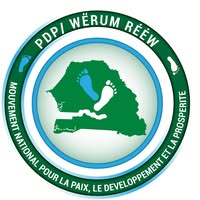

PDP Wérum Réw – Coordination de Mbao
Bienvenue sur la plateforme officielle d'adhésion numérique du parti. Ce formulaire vous permettra de devenir membre en quelques minutes depuis votre téléphone ou votre ordinateur. Après validation de votre dossier, un numéro d'adhérent sera généré automatiquement ainsi qu'une carte de membre numérique contenant un QR Code.
Adhérents inscrits
Coordination Mbao
Campagne d'adhésion
🔒 Vos informations sont utilisées uniquement dans le cadre de l'adhésion au PDP Wérum Réw.
Après validation de votre dossier, un numéro d'adhérent sera généré automatiquement ainsi qu'une carte de membre numérique contenant un QR Code.